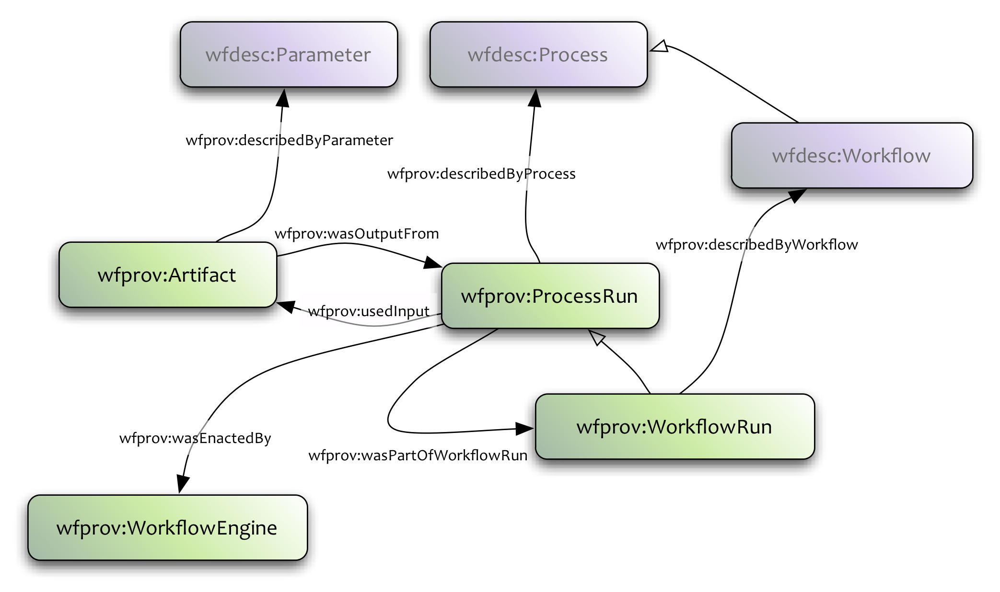

wfprov:
A vocabulary for the description of provenance information. This provides an abstraction that can be mapped to different provenance vocabularies.
Provenance of workflow execution is described using the wfprov ontology, under namespace http://purl.org/wf4ever/wfprov#.

The wfprov ontology describes the provenance of the workflow results. A wfprov:WorkflowRun describes the activity of running a wfdesc:WorkflowInstance. It groups the wfprov:ProcessRuns of the execution with the relationship wfprov:wasPartOfWorkflowRun.
Each wfprov:ProcessRun represents a step of the workflow execution. It may have dependencies to different wfprov:Artifacts, which are modeled with the relationship wfprov:usedInput. Every result generated by one of the wfprov:ProcessRuns is linked by the relation wfprov:wasOutputFrom
Different wfprov:ProcessRuns may have been executed by different workflow engines. We can specify which one run each step with the wfprov:wasEnactedBy relationship.
Finally, we can link each wfprov:Artifact, wfprov:ProcessRun and wfprov:WorkflowRun to their correspondant wfdesc description by the wfprov:describedByParameter, wfprov:describedByProcess and wfprov:describedByWorkflow respectively.
IRI: http://purl.org/wf4ever/wfprov#Artifact
IRI: http://purl.org/wf4ever/wfprov#ProcessRun
A process run is a particular execution of a wfdesc:Process description (wfprov:describedByProcess), which can wfprov:usedInput some wfprov:Artifact instances, and produce new artifacts (wfprov:wasOutputFrom). A wfprov:WorkflowRun is a specialisation of this class.
IRI: http://purl.org/wf4ever/wfprov#WorkflowEngine
A workflow engine is an foaf:Agent that is responsible for enacting a workflow definition (which could be described in a wfdesc:Workflow). The result of workflow enactment gives rise to a wfprov:WorkflowRun.
IRI: http://purl.org/wf4ever/wfprov#WorkflowRun
A workflow run is a wfprov:ProcessRun which have been enacted by a wfprov:WorkflowEngine, according to a workflow definition (which could be wfdesc:describedByWorkflow a wfdesc:Workflow). Such a process typically contains several subprocesses (wfprov:wasPartOfWorkflowRun) corresponding to wfdesc:Process descriptions
IRI: http://purl.org/wf4ever/wfprov#describedByParameter
This object property is used to associate a wfprov:Artifact to the wfdesc:Parameter description.
IRI: http://purl.org/wf4ever/wfprov#describedByProcess
This object property associate a wfprov:Processrun to its wfdesc:Process description .
IRI: http://purl.org/wf4ever/wfprov#describedByWorkflow
This property associates a wfprov:WorkflowRun to its corresponding wfdesc:Workflow description.
IRI: http://purl.org/wf4ever/wfprov#usedInput
This property specifies that a wfprov:ProcessRun used an wfprov:Artifact as an input
IRI: http://purl.org/wf4ever/wfprov#wasEnactedBy
wfprov:wasEnactedBy associates a wfprov:ProcessRun with a wfprov:WorkflowEngine, specifying that the execution of the process was enacted by the engine.
IRI: http://purl.org/wf4ever/wfprov#wasOutputFrom
This property specifies that a wfprov:Artifact was generated as an output from a wfprov:ProcessRun
IRI: http://purl.org/wf4ever/wfprov#wasPartOfWorkflowRun
This property specifies that a wfprov:ProcessRun was executed as part of a wfprov:WorkflowRun. This typically corresponds to wfdesc:hasSubProcess in the workflow description.
The example below illustrates a workflow execution we1 that was composed of two processes :proc1 and :proc2. The output of :proc1 (:o1) is the input used by :proc2. Both processes are described by a wfdesc:Process
@prefix wfprov: <http://purl.org/wf4ever/wfprov#> . :wf1 a wfprov:WorkflowRun ; wfprov:describedByWorkflow :wfTempl; wfprov:wasEnactedBy :Taverna. #Additional metadata about the workflow run could be added here: start time, end time, whether it has bees successful, etc. :proc1 a wfprov:ProcessRun ; wfprov:usedInput :i1 ; wfprov:wasPartOfWorkflowRun :wf1; wfprov:describedByProcess :templProcess1. :proc2 a wfprov:ProcessRun ; wfprov:usedIntput :o1 ; wfprov:wasPartOfWorkflowRun :wf1; wfprov:describedByProcess :templProcess2 . :i1 a wfprov:Artifact; wfprov:describedByParameter :param1. :o1 a wfprov:Artifact; wfprov:wasOutputFrom :proc1; wfprov:describedByParameter :param2. :o2 a wfprov:Artifact; wfprov:wasOutputFrom :proc2; wfprov:describedByparameter :param3. #wfdesc:parameters and templates have been omitted to leave the example as simple as possible.
This example comes from a use case that deals with large sets of tabular data (catalogues of numbers) curated by the user. The data are calculated by means of mathematical equations based on experimental values coming from external data repositories. Updating of the external data repositories has an impact on the curation of the user dataset, it is essential to know how (in which quantity) and when these databases are updated, so that the propagation of these changes through the existing internal relation among the data can be triggered and registered.
The scientific experiment represented by this research object pertains to the multi-wavelength study for a sample of the most isolated galaxies in the local universe. This study characterizes each galaxy of this sample through both the measurement of basic astrophysical properties:Specifically, this research object is focused on the calculation of the intrinsic luminosity in the Johnson B-band, in order to achieve it the measurement or calculation of all those astrophysical properties is needed.
This research object consists of several resources, including workflows, input and output datasets, scripts, web services and other documents. The type and role of each of these resources (by their relative name) are as follows:
Here we provide snippets of RDF illustrating particular aspects of the RO description. These snippets are all taken from the RO manifest.
<http://sandbox.wf4ever-project.org/rosrs5/ROs/HyperLEDALuminosities/.ro/manifest>
dct:created "2012-02-01T09:33:56.923Z"^^<http://www.w3.org/2001/XMLSchema#dateTime> ;
dct:creator [
a <http://xmlns.com/foaf/0.1/Agent> ;
foaf:name "RODL"
] ;
ore:describes <http://sandbox.wf4ever-project.org/rosrs5/ROs/HyperLEDALuminosities/> ;
a <http://purl.org/wf4ever/ro#Manifest> .
The following snippet captures the basic aggregation of resources within the RO.
<http://sandbox.wf4ever-project.org/rosrs5/ROs/HyperLEDALuminosities/>
dct:created "2012-02-01T09:33:56.832Z"^^<http://www.w3.org/2001/XMLSchema#dateTime> ;
dct:creator <https://www.google.com/accounts/o8/id?id=AItOawl7tEZAtdiQmIigvXcU4KkhGsBzgm0gfKM> ;
ore:isDescribedBy <http://sandbox.wf4ever-project.org/rosrs5/ROs/HyperLEDALuminosities/.ro/manifest> ;
a <http://purl.org/wf4ever/ro#ResearchObject> ;
ore:aggregates <http://leda.univ-lyon1.fr/ledacat.cgi>,
<http://sandbox.wf4ever-project.org/rosrs5/ROs/HyperLEDALuminosities/.ro/manifest#0f184259-a189-4d2c-8c04-66d7d322d1a8>,
<http://sandbox.wf4ever-project.org/rosrs5/ROs/HyperLEDALuminosities/.ro/manifest#14e42518-b337-2312-a76b-aa2b21cb3222>,
...
<http://sandbox.wf4ever-project.org/rosrs5/ROs/HyperLEDALuminosities/.ro/manifest#annGathering>,
<http://sandbox.wf4ever-project.org/rosrs5/ROs/HyperLEDALuminosities/.ro/manifest#annPropagation>,
...
<http://sandbox.wf4ever-project.org/rosrs5/ROs/HyperLEDALuminosities/CONTENT.txt>,
<http://sandbox.wf4ever-project.org/rosrs5/ROs/HyperLEDALuminosities/D1.2.pdf>,
...
<http://sandbox.wf4ever-project.org/rosrs5/ROs/HyperLEDALuminosities/GoldenTrace.txt>,
<http://sandbox.wf4ever-project.org/rosrs5/ROs/HyperLEDALuminosities/NamesLEDA.txt>,
<http://sandbox.wf4ever-project.org/rosrs5/ROs/HyperLEDALuminosities/Paturel.pdf>,
<http://sandbox.wf4ever-project.org/rosrs5/ROs/HyperLEDALuminosities/README.txt>,
<http://sandbox.wf4ever-project.org/rosrs5/ROs/HyperLEDALuminosities/RECIPES.txt>,
<http://sandbox.wf4ever-project.org/rosrs5/ROs/HyperLEDALuminosities/Ruiz.pdf>,
<http://sandbox.wf4ever-project.org/rosrs5/ROs/HyperLEDALuminosities/Vauglin.pdf>,
...
<http://sandbox.wf4ever-project.org/rosrs5/ROs/HyperLEDALuminosities/btcNew.txt>,
<http://sandbox.wf4ever-project.org/rosrs5/ROs/HyperLEDALuminosities/calculateDistance.py>,
...
<http://sandbox.wf4ever-project.org/rosrs5/ROs/HyperLEDALuminosities/comparison_and_update_values_475535.>,
...
<http://sandbox.wf4ever-project.org/rosrs5/ROs/HyperLEDALuminosities/eq2gal.py>,
<http://sandbox.wf4ever-project.org/rosrs5/ROs/HyperLEDALuminosities/extractJ2000Coord.py>,
<http://sandbox.wf4ever-project.org/rosrs5/ROs/HyperLEDALuminosities/extractPropertyVal.py>,
<http://sandbox.wf4ever-project.org/rosrs5/ROs/HyperLEDALuminosities/morphoNew.txt>,
..
<http://sandbox.wf4ever-project.org/rosrs5/ROs/HyperLEDALuminosities/updating.py>,
<http://sandbox.wf4ever-project.org/rosrs5/ROs/HyperLEDALuminosities/velocitiesNew.txt> .
An annotation expressing creation metadata. Jose Enrique Luiz created resources GoldenTrace.txt.
<http://sandbox.wf4ever-project.org/rosrs5/ROs/HyperLEDALuminosities/.ro/manifest#14e42518-b337-2312-a76b-aa2b21cb3222>
ao:body <http://sandbox.wf4ever-project.org/rosrs5/ROs/HyperLEDALuminosities/GoldenTrace.txt> ;
dct:created "2012-02-01T09:37:23.662Z"^^<http://www.w3.org/2001/XMLSchema#dateTime> ;
dct:creator _:A0 ;
ao:annotatesResource <http://sandbox.wf4ever-project.org/rosrs5/ROs/HyperLEDALuminosities/> ;
a ao:Annotation .
<http://sandbox.wf4ever-project.org/rosrs5/ROs/HyperLEDALuminosities/.ro/manifest#14e42518-b337-4698-a76b-aa2b21cb3222>
ao:body <http://sandbox.wf4ever-project.org/rosrs5/ROs/HyperLEDALuminosities/.ro/RECIPES.txt-8230278887054687059> ;
dct:created "2012-02-01T09:37:23.662Z"^^<http://www.w3.org/2001/XMLSchema#dateTime> ;
dct:creator _:A0 ;
ao:annotatesResource <http://sandbox.wf4ever-project.org/rosrs5/ROs/HyperLEDALuminosities/RECIPES.txt> ;
a ao:Annotation .
_:A0
a <http://xmlns.com/foaf/0.1/Agent> ;
foaf:name "Jose Enrique Ruiz" .
Finally, we have annotations that describe the fact that a particular workflow run made use of data sets to produce some results.
<http://leda.univ-lyon1.fr/ledacat.cgi>
a <http://purl.org/wf4ever/wf4ever#WebServiceProcessTemplate> .
<http://sandbox.wf4ever-project.org/rosrs5/ROs/HyperLEDALuminosities/.ro/annGathering#GatheringRun1>
wfprov:describedByWorkflow <http://sandbox.wf4ever-project.org/rosrs5/ROs/HyperLEDALuminosities/gathering_galaxy_properties_using_hyperleda_129473.> ;
wfprov:usedInput <http://sandbox.wf4ever-project.org/rosrs5/ROs/HyperLEDALuminosities/NamesLEDA.txt> ;
a <http://purl.org/wf4ever/wfprov#WorkflowRun> .
<http://sandbox.wf4ever-project.org/rosrs5/ROs/HyperLEDALuminosities/NamesLEDA.txt>
a <http://purl.org/wf4ever/wf4ever#Dataset> .
<http://sandbox.wf4ever-project.org/rosrs5/ROs/HyperLEDALuminosities/agNew.txt>
wfprov:wasOutputFrom <http://sandbox.wf4ever-project.org/rosrs5/ROs/HyperLEDALuminosities/.ro/annGathering#GatheringRun1> ;
a <http://purl.org/wf4ever/wf4ever#Dataset> .
<http://sandbox.wf4ever-project.org/rosrs5/ROs/HyperLEDALuminosities/btNew.txt>
wfprov:wasOutputFrom <http://sandbox.wf4ever-project.org/rosrs5/ROs/HyperLEDALuminosities/.ro/annGathering#GatheringRun1> ;
a <http://purl.org/wf4ever/wf4ever#Dataset> .
<http://sandbox.wf4ever-project.org/rosrs5/ROs/HyperLEDALuminosities/extractJ2000Coord.py>
a <http://purl.org/wf4ever/wfdesc#Process> .
<http://sandbox.wf4ever-project.org/rosrs5/ROs/HyperLEDALuminosities/extractPropertyVal.py>
a <http://purl.org/wf4ever/wfdesc#Process> .
<http://sandbox.wf4ever-project.org/rosrs5/ROs/HyperLEDALuminosities/gathering_galaxy_properties_using_hyperleda_129473.>
wfdesc:hasSubProcess <http://leda.univ-lyon1.fr/ledacat.cgi>, <http://sandbox.wf4ever-project.org/rosrs5/ROs/HyperLEDALuminosities/extractJ2000Coord.py>, <http://sandbox.wf4ever-project.org/rosrs5/ROs/HyperLEDALuminosities/extractPropertyVal.py> ;
a <http://purl.org/wf4ever/wfdesc#Workflow> .
<http://sandbox.wf4ever-project.org/rosrs5/ROs/HyperLEDALuminosities/j2000Coords.txt>
wfprov:wasOutputFrom <http://sandbox.wf4ever-project.org/rosrs5/ROs/HyperLEDALuminosities/.ro/annGathering#GatheringRun1> ;
a <http://purl.org/wf4ever/wf4ever#Dataset> .
<http://sandbox.wf4ever-project.org/rosrs5/ROs/HyperLEDALuminosities/logr25New.txt>
wfprov:wasOutputFrom <http://sandbox.wf4ever-project.org/rosrs5/ROs/HyperLEDALuminosities/.ro/annGathering#GatheringRun1> ;
a <http://purl.org/wf4ever/wf4ever#Dataset> .
<http://sandbox.wf4ever-project.org/rosrs5/ROs/HyperLEDALuminosities/velocitiesNew.txt>
wfprov:wasOutputFrom <http://sandbox.wf4ever-project.org/rosrs5/ROs/HyperLEDALuminosities/.ro/annGathering#GatheringRun1> ;
a <http://purl.org/wf4ever/wf4ever#Dataset> .
The v0.1 RO ontologies can be found on github as OWL/Turtle format:
Note on namespaces:
An artifact is a data value or item which wfprov:wasOutputFrom of a wfprov:ProcessRun or that the process run used as input (wfprov:usedInput). Such an artifact might also be a ro:Resource if it has been aggregated in the ro:ResearchObject (typically if the artifact was used or generated by a wfprov:WorkflowRun) - but this might always not be the case for intermediate values from wfprov:ProcessRun.